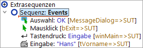
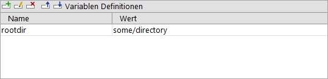
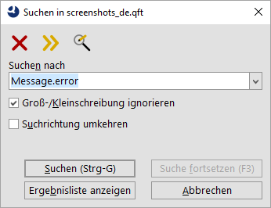
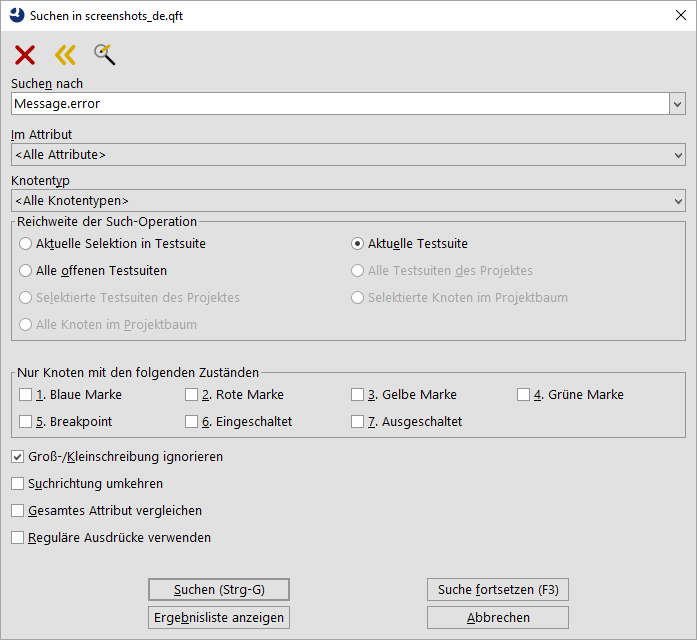
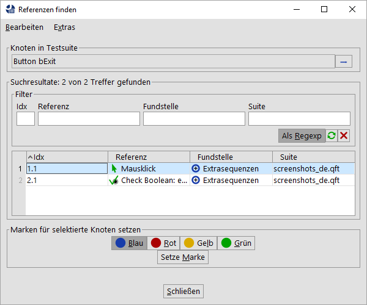
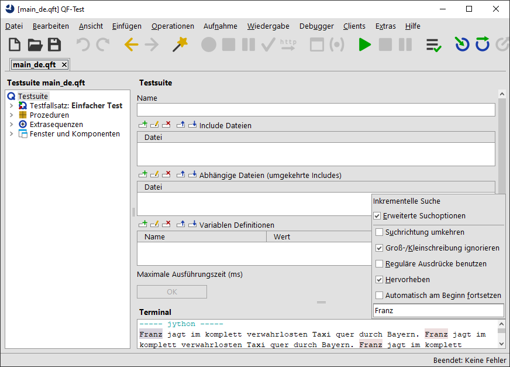
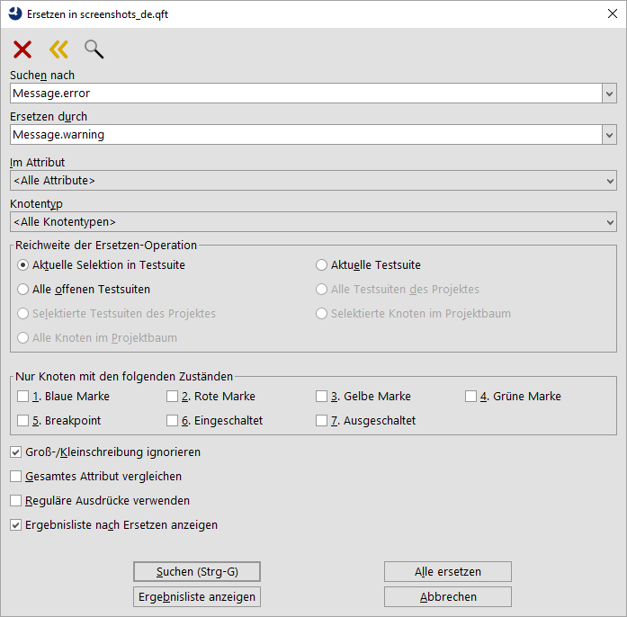
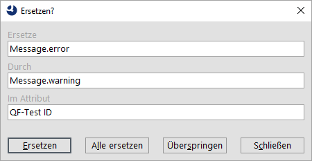

| Version 6.0.3 |
Dieses Kapitel beschreibt den Aufbau des QF-Test Hauptfensters und wie Sie
sich darin zurechtfinden. Spätestens nach diesem Kapitel ist es an der
Zeit, QF-Test zu starten und verschiedene Dinge auszuprobieren. Über den Menüeintrag
»Hilfe«-»Tutorial« können Sie Ihren Browser mit
dem QF-Test "learning-by-doing" Tutorial starten. Sollte das mit Ihrer
Systemkonfiguration nicht klappen, finden Sie das Tutorial im
Verzeichnis qftest-6.0.3/doc/tutorial. Dort
gibt es auch eine PDF Variante.
 Der erste Teil des Videos 'Das
Hauptfenster und das System under Test' befasst sich mit den Bestandteilen des QF-Test
Hauptfensters.
Der erste Teil des Videos 'Das
Hauptfenster und das System under Test' befasst sich mit den Bestandteilen des QF-Test
Hauptfensters.
Zum Automatisieren von GUI Tests benötigt man zwei Dinge: Kontrollstrukturen und Daten. Die Kontrollstrukturen legen fest, was zu tun ist und wann es zu tun ist. Die Daten für die Tests setzen sich aus den Informationen über die GUI Komponenten des SUT (System under test), den zu simulierenden Events und den erwarteten Ergebnissen zusammen.
QF-Test vereint alles zusammen in einer hierarchischen Baumstruktur, die wir als Testsuite bezeichnen. Die Elemente des Baums werden Knoten genannt. Knoten können weitere Knoten enthalten, in bestem "Denglish" Childknoten (oder kurz Children) genannt. Beim übergeordneten Knoten reden wir vom Parentknoten (kurz Parent). Der Wurzelknoten des Baums repräsentiert die Testsuite als Ganzes.
Es gibt mehr als 60 verschiedene Arten von Knoten, die alle im Detail im Referenzteil beschrieben werden. Manche Knoten fungieren nur als Datencontainer, während andere den Ablauf von Tests steuern. Alle haben ihre speziellen Eigenschaften in Form von Attributen.
Die jeweiligen Attribute des gerade selektierten Knotens werden zur Rechten des Baums in der Detailansicht dargestellt. Diese ist über das Menü »Ansicht«-»Details« ein- oder ausschaltbar.
|
|  |
||
|
| Abbildung 2.1: Struktur einer Testsuite | ||
Die obige Abbildung zeigt ein einfaches Beispiel einer Testsuite. Die Attribute des Knotens "Einfacher Test" können rechts in der Detailansicht bearbeitet werden.
Eine Testsuite - und damit der 'Testsuite' Wurzelknoten - besitzt die folgende Grundstruktur: Eine beliebige Anzahl von 'Testfallsatz' oder 'Testfall' Knoten, gefolgt von den 'Prozeduren', 'Extrasequenzen' und 'Fenster und Komponenten' Knoten. Der 'Prozeduren' Knoten enthält die 'Packages' und 'Prozeduren', die in Abschnitt 8.5 beschrieben werden. Der 'Extrasequenzen' Knoten ist eine Art Spielwiese oder Clipboard, wo alle Arten von Knoten für Experimente oder zur Zwischenlagerung abgelegt werden können. Die Fenster und Komponenten, die die Oberfläche des SUT bilden, werden durch 'Fenster' und 'Komponente' Knoten repräsentiert und sind unterhalb des 'Fenster und Komponenten' Knotens angesiedelt.
Um detaillierte Informationen zu einem Knoten oder einem seiner Attribute zu bekommen, klicken Sie darauf mit der rechten Maustaste und wählen Sie im Kontextmenü »Was ist das?«. Dies öffnet einen HTML Browser mit dem entsprechenden Abschnitt des Handbuchs.
Zum Editieren einer Testsuite gibt es sowohl Funktionen zur Bearbeitung der Knoten als Ganzes, wie Ausschneiden/Kopieren/Einfügen, als auch für deren Attribute. Letztere können direkt in den Feldern der Detailansicht editiert werden, was durch Drücken des OK Knopfs oder [Return] abgeschlossen werden muss. Alternativ kann mittels »Bearbeiten«-»Eigenschaften« oder [Alt-Return] ein eigener Dialog für die Attribute des selektierten Knotens geöffnet werden. Wenn Sie Werte in der Detailansicht ändern und vergessen, OK zu drücken, bevor Sie einen anderen Knoten selektieren, wird ebenfalls ein Dialog geöffnet, in dem Sie Ihre Änderungen abschließen oder verwerfen können. Dieses Feature kann über die Option Vor implizitem Übernehmen von Änderungen in den Details nachfragen abgeschaltet werden.
Für die Bearbeitung von mehrzeiligen Textfeldern gibt es einige nützliche Tastaturkürzel: [Strg-TAB] und [Shift-Strg-TAB] bewegen den Tastaturfokus aus dem Textfeld heraus, [Strg-Return] entspricht einem Klick auf den OK Knopf.
Eine äußerst nützliche Funktion ist »Bearbeiten«-»Rückgängig machen« ([Strg-Z]), auch Undo genannt. Sie macht jede Art von Änderung an der Testsuite rückgängig, inklusive Aufnahmen oder Änderungen mit Hilfe des Suchen/Ersetzen Dialogs. Änderungen werden dabei Schritt für Schritt aufgehoben. Die Anzahl der verfügbaren Schritte ist in der Option Anzahl der zurücknehmbaren Änderungen pro Suite einstellbar, Standard ist 30. Sollten Sie zu viele Schritte rückgängig gemacht haben, können Sie diese mittels »Bearbeiten«-»Wiederherstellen« ([Strg-Y]) wieder herstellen.
Auch wenn die Tastaturkürzel für die Navigation im Baum den üblichen Konventionen entsprechen, sollen sie hier noch einmal genannt werden. Darüber hinaus bietet QF-Test einige hilfreiche Zusatzfunktionen.
Die Pfeiltasten dienen zur grundlegenden Navigation. [Hoch] und [Runter] sind offensichtlich, [Rechts] expandiert entweder einen geschlossenen Knoten, oder geht zum nächsten Knoten, während [Links] entweder einen geöffneten Knoten schließt, oder zu seinem Parentknoten springt.
Bäume in QF-Test erlauben eine spezielle Variante von Mehrfachselektion. Es können mehrere nicht zusammenhängende Regionen selektiert werden, aber nur unter den Knoten eines gemeinsamen Parentknotens. Wäre Mehrfachselektion über den ganzen Baum erlaubt, würde Ausschneiden und wieder Einfügen in totalem Chaos enden. Tastaturkürzel zum Ausprobieren sind [Shift-Hoch] und [Shift-Runter] um die Selektion zu erweitern, [Strg-Hoch] und [Strg-Runter] für Bewegungen ohne Änderung der Selektion und [Leertaste] zum Umschalten der Selektion des aktuellen Knotens. Analog erweitern Mausklicks in Kombination mit der [Shift] Taste die Selektion, während Klicks mit [Strg] die Selektion des angeklickten Knotens umschalten.
Spezielle Kürzel sind [Alt-Rechts] und [Alt-Links], welche rekursiv einen Knoten mit all seinen Childknoten aus- oder einklappen,. [Alt-Runter] und [Alt-Hoch] navigieren zum nächsten oder vorhergehenden Knoten auf der selben Ebene, dazwischen liegende Childknoten werden übersprungen.
Intern merkt sich QF-Test die zuletzt angesprungenen Knoten. [Strg-Backspace] navigiert zum zuletzt selektierten Knoten, auch mehrere Schritte zurück.
Zu guter Letzt sollten noch [Strg-Rechts] und [Strg-Links] erwähnt werden, mit deren Hilfe der Baum horizontal gescrollt werden kann, wenn er zu groß für seinen Rahmen geworden ist.
Wenn Sie neue Knoten anlegen oder eine Aufnahme oder kopierte Knoten in die Testsuite einfügen, zeigt Ihnen die Einfügemarkierung an, wo die neuen Knoten landen werden.
|
|  | ||
|
| Abbildung 2.2: Einfügemarkierung | ||
Knoten werden immer nach dem selektierten Knoten eingefügt. Ist der selektierte Knoten geöffnet, werden der oder die neuen Knoten Children des selektierten Knotens, andernfalls landen sie auf der gleichen Ebene.
Im Beispiel der obigen Abbildung 2.2 würde ein neuer Knoten als erstes Child der Sequenz "Events" vor dem Mausevent eingefügt.
Knoten können kopiert und eingefügt werden oder innerhalb einer Testsuite oder über Testsuite Grenzen hinweg verschoben werden. Die üblichen Tastaturkürzel [Strg-X], [Strg-C] und [Strg-V] werden dazu ebenso unterstützt wie entsprechende Einträge im Kontextmenü.
2.0+ Alternativ können Knoten auch durch Ziehen mit der Maus, genannt Drag&Drop, verschoben werden. Normalerweise werden der oder die markierten Knoten bei dieser Operation verschoben. Durch Drücken der [Strg] Taste während des Loslassens können die Knoten stattdessen kopiert werden.
Während die Maus über den Baum einer Testsuite gezogen wird zeigt die Einfügemarkierung an, wo die Knoten beim Loslassen der Maus eingefügt werden und ob die Operation so erlaubt ist. Eine grüne Markierung signalisiert erwartungsgemäß eine gültige Operation, eine rote Markierung eine ungültige. In letzterem Fall passiert beim Loslassen der Maus gar nichts.
Während des Ziehens können Sie Knoten im Baum auf- oder zuklappen indem Sie mit dem Mauszeiger über den entsprechenden Schalter fahren und dort kurz verharren. Auf diesem Weg können Sie einfach zur Zielposition navigieren, ohne die Drag&Drop Operation abbrechen und neu starten zu müssen.
Die Drag&Drop Operation kann jeder Zeit durch Drücken der [Esc] Taste abgebrochen werden.
Manche Knoten können in einen anderen Knotentyp konvertiert werden, was wesentlich bequemer ist als erst den gewünschten Knoten anzulegen und dann die benötigten Attribute zu kopieren. Beispiele von austauschbaren Knoten sind 'Sequenz' und 'Testschritt' oder 'Server Skript' und 'SUT Skript'. Die Konvertierung eines Knotens ist nur dann möglich, wenn seine Childknoten und seine aktuelle Position im Baum auch für den gewünschten Zielknoten gültig sind. Mögliche Ziele der Konvertierung können unter dem Eintrag »Knoten konvertieren in« im Kontextmenü ausgewählt werden. Ist dieser Eintrag nicht verfügbar, gibt es keine gültigen Zielknoten. In diesem Fall kann es hilfreich sein, den Ausgangsknoten zunächst unter die 'Extrasequenzen' zu verschieben.
Sie finden weitere Details über den Konvertierungsmechanismus unter Details zu Knotenkonvertierungen.
An verschiedenen Stellen verwendet QF-Test Tabellen zur Darstellung und Bearbeitung von Werten, z.B. um Variablen zu definieren oder für Checks von mehreren Elementen.
|
|  | ||
|
| Abbildung 2.3: Beispieltabelle | ||
Die Buttons oberhalb der Tabelle haben folgende Tastaturkürzel und Bedeutung:
|
[Shift-Einfg] Zeile einfügen. Legt eine neue Zeile an. |
||
|
|
[Shift-Return],
[Alt-Return] Zeile bearbeiten. Öffnet einen Dialog mit Eingabefeldern für alle Zellen der aktuellen Zeile. |
|
|
[Shift-Entf] Zeile löschen. Entfernt die aktuelle Zeile. |
||
|
[Shift-Strg-Hoch] Zeile nach oben verschieben. Verschiebt die aktuelle Zeile um eine Position nach oben. |
||
|
[Shift-Strg-Runter] Zeile nach unten verschieben. Verschiebt die aktuelle Zeile um eine Position nach unten. |
Manche Tabellen bieten zusätzlich die Möglichkeit, Spalten anzulegen und zu löschen, sowie die Überschriften der Spalten zu bearbeiten und stellen dazu die folgenden Buttons bereit:
| Spalte einfügen. Fügt eine neue Spalte ein. | ||
| Spalte löschen. Löscht die selektierte Spalte. | ||
| Spalte bearbeiten. Öffnet einen Dialog zum Bearbeiten der Spaltenüberschrift. |
Um einen Wert direkt in der Tabelle zu editieren, können Sie einfach losschreiben. Dabei wird der aktuelle Wert überschrieben. Um den vorhandenen Wert zu verändern, drücken Sie zunächst [F2] oder selektieren Sie die Zelle mit einem Doppelklick. Zum Abschluss der Bearbeitung drücken Sie [Return], abbrechen können Sie mit [Escape]. Wenn Sie versuchen, einen unzulässigen Wert einzugeben, färbt sich der Rand der Zelle rot und Sie können die Eingabe nicht übernehmen.
Die Tabellen unterstützen Mehrfachselektion der Zeilen (Mausklicks mit [Shift/Strg], [Shift/Strg-Hoch/Runter]) sowie Ausschneiden, Kopieren und Einfügen von ganzen Zeilen ([Strg-X/C/V]). Das Einfügen ist dabei auf Tabellen mit gleichartigen Spalten beschränkt.
Im Kontextmenü der Tabelle können noch weitere Aktionen verfügbar sein, z.B. Anzeigen von Zeilennummern, Komponente finden, etc.
Ein Mausklick auf die Spaltenüberschrift aktiviert die Sortierung der Zeilen. Ein Doppelklick auf die Spaltenüberschrift passt die Spaltenbreite automatisch an den breitesten Wert innerhalb der Spalte an oder erlaubt das Editieren des der Spaltenüberschrift (bei Datentablle).
Während der Entwicklung von Tests ist es ab und zu notwendig, mehrere Knoten unter einen neuen Elternknoten zu verschieben. Eine typische Situation hierfür ist das Refactoring von Prozeduren bzw. das Reorganisieren dieser Knoten in Packages oder einen Ablauf in einen 'Try'/'Catch' Block zu packen.
Für solche Anforderungen erlaubt QF-Test dem Benutzer Knoten zu packen. Dies kann mittels Rechtsklick auf die entsprechenden Knoten und Auswahl von »Knoten einpacken« und des gewünschten neuen Elternknotens erreicht werden.
QF-Test erlaubt ebenfalls Knoten wieder zu entpacken und deren Elternknoten zu löschen. Diesen Ansatz kann man z.B. verwenden, um Test unnötige Packages bzw. Testfallsätze zu löschen oder einen 'Try'/'Catch' Block wieder zu entfernen. Um Knoten zu entpacken selektieren Sie den entsprechenden Knoten und wählen im Kontextmenü »Knoten entpacken« aus.
Hinweis Die Pack- und Entpackaktionen werden nur dann im Kontextmenü angezeigt, wenn das Einfügen der Kindknoten in der aktuellen Struktur erlaubt ist.
QF-Test gibt Ihnen die Möglichkeit Knoten einer Testsuite zu sortieren. Dies erreichen Sie mittels Rechtsklick auf den entsprechenden Knoten und Auswahl von »Knoten rekursiv sortieren«. Alternativ können Sie auch mehrere Knoten markieren und mittels »Knoten sortieren« nur die markierten Knoten in eine geordnete Reihenfolge bringen.
Der Algorithmus sortiert zur Zeit Ziffern vor Großbuchstaben und diese vor Kleinbuchstaben. Neben der bestehenden Grundstruktur von QF-Test, die eingehalten werden muss, besteht noch die Regel, dass 'Package' Knoten immer vor 'Abhängigkeit' Knoten und diese vor 'Prozedur' Knoten einsortiert werden.
Hinweis Die Grundstruktur einer Testsuite wird vom Sortieren nicht verändert. In einer Testsuite können Sie zwar Testfälle und Prozeduren sortieren, allerdings wird der 'Prozeduren' Knoten immer vor dem 'Fenster und Komponenten' Knoten sein.
Dieser Abschnitt erläutert die etwas komplexeren Bearbeitungsmöglichkeiten wie Suchen/Ersetzen oder die Arbeit mit mehreren Ansichten der selben Testsuite.
QF-Test bietet zwei Arten von Suchoperationen, eine allgemeine Suche durch alle Knoten und deren Attribute in Testsuiten und Protokollen sowie eine inkrementelle Suche in Textfeldern, darunter auch Skript-Terminals und Programmausgaben.
Obwohl die Funktionen zum Suchen und Ersetzen vieles gemeinsam haben, gibt es signifikante Unterschiede, vor allem in der Reichweite der Operation. Eine Suche startet normalerweise beim selektierten Knoten und geht von dort den Baum bis zum Ende durch. Nach einer entsprechenden Rückfrage wird die Suche am Anfang des Baums fortgesetzt und endet spätestens beim ursprünglichen Startknoten, so dass jeder Knoten des Baums genau einmal durchlaufen wird. Dieses Vorgehen ist analog zur Suchfunktion in gängigen Textverarbeitungen und sollte intuitiv zu benutzen sein.
Anfangs öffnet QF-Test die 'einfache' Suche. Diese erlaubt Ihnen nach einen bestimmten Text zu suchen.
|
|  | ||
|
| Abbildung 2.4: Der Dialog für die einfache Suche | ||
Für eine spezifischere Suche, z.B. nach Attributen, Knotentypen oder bestimmten Zuständen von Knoten können Sie in den 'Fortgeschrittenen' Suchmodus wechseln. Hierfür klicken Sie auf den 'Suchmodus wechseln' Knopf in der Werkzeugleiste.
|
|  | ||
|
| Abbildung 2.5: Der fortgeschrittene Suchdialog | ||
Normalerweise durchsucht QF-Test alle Attribute in allen Arten von Knoten nach dem gewünschten Text.
Mit Hilfe der Option "Im Attribut" lässt sich die Suche auf ein spezielles Attribut einschränken.
Über die Option "Knotentyp" kann mann die Suche auf eine spezielle Art von Knoten einschränken.
Die Option "Reichweite der Such-Operation" setzt fest, wo nach dem angegebenen Ausdruck gesucht werden soll. Dies kann entweder in den aktuell selektierten Knoten, in der gesamten Testsuite oder in allen offenen Testsuiten geschehen.
Wenn Sie die Option "Nur Knoten mit den folgenden Zuständen" auswählen, wird nur nach Knoten gesucht, welche den angegebenen Status besitzen, z.B. einer grünen Marke oder einen Breakpoint.
Ist "Gesamtes Attribut vergleichen" aktiviert, muss der gesuchte Text genau einem Wert entsprechen, andernfalls genügt es, wenn der Suchtext im Attribut enthalten ist.
Reguläre Ausdrücke werden in Abschnitt 45.3 erklärt.
Hinweis Um nach Werten von Booleschen Attributen wie 'Als "harten" Event wiedergeben' zu suchen, verwenden Sie "true" oder "false" (ohne Anführungsstriche) als Suchtext. Falls Sie nach leeren Werten suchen möchten, müssen Sie "Gesamtes Attribut vergleichen" anhaken.
Wenn die Suche erfolgreich ist, wird der gefundene Knoten markiert und eine Meldung in der Statuszeile ausgegeben, die den Namen des gefundenen Attributs angibt.
3.4+Wie bereits erwähnt, startet die Suche normalerweise vom gerade selektierten Knoten. Falls Sie allerdings während des Suchprozesses die Selektion ändern möchten und trotzdem die vorherige Suche fortsetzen wollen, dann können Sie dies mit dem Button "Suche fortsetzen" erreichen.
Wenn der Suchdialog geschlossen wurde, können Sie die Suche immer noch fortsetzen, in dem Sie [F3] drücken. Mittels [Ctrl-G] können Sie sogar die selbe Suche von einem neuen Knoten aus starten.
Ein sehr nützliches Feature ist die Fähigkeit nach allen 'Prozeduraufruf' Knoten zu suchen, die eine bestimmte 'Prozedur' aufrufen, oder nach allen 'Events', die eine bestimmte 'Komponente' benötigen. Wählen Sie hierzu einfach den Menüeintrag »Referenzen finden...« im Kontextmenü des Knotens, der aufgerufen oder referenziert wird. Danach wird ein neues Fenster mit allen Referenzen auf den ausgewählten Knoten angezeigt. In diesem Fenster können Sie mittels Doppelklick auf einen Eintrag zur jeweiligen Stelle in der Testsuite springen.
|
|  | ||
|
| Abbildung 2.6: Resultatsliste von 'Referenzen finden' | ||
3.1+Es ist ebenso möglich alle gefundenen Knoten aus dem Suchdialog mittels Klick auf "Ergebnisliste anzeigen" zu erreichen. Von diesem Fenster aus, können Sie auch wiederum jeden einzelnen Knoten der Testsuite erreichen.
3.1+ Zusätzlich zur Suche im Baum gibt es die Möglichkeit für inkrementelles Suchen in Komponenten, die Text enthalten, wie z.B. das Terminal oder entsprechende Attribute in der Detailansicht. Diese Features kann über den »Suchen...« Eintrag im Kontextmenü der Komponente aktiviert werden oder durch Drücken von [Strg-F], wenn die Komponente ausgewählt ist und den Tastaturfokus besitzt. Dann erscheint das Eingabefenster für die inkrementelle Suche am rechten oberen Rand der entsprechenden Komponente. Die folgende Abbildung zeigt eine inkrementelle Suche für das Terminal mit hervorgehobenen Suchtreffern.
|
|  | ||
|
| Abbildung 2.7: Die inkrementelle Suche | ||
Die Suche kann auf einen bestimmten Teil des enthaltenen Textes beschränkt werden, in dem man den gewünschten Bereich selektiert und den »Suchen in Auswahl...« Eintrag im Kontextmenü der Komponente wählt oder [Strg-Umschalt-F] drückt.
Ansonsten sollte die inkrementelle Suche und auch die verfügbaren Optionen selbsterklärend sein.
Wenn man einmal die Besonderheiten beim Gültigkeitsbereich verinnerlicht hat, ist der Ersetzen Dialog ebenso intuitiv zu benutzen wie der Suchdialog. Beim Ersetzen haben Sie die Möglichkeit, einen Treffer nach dem anderen zu ersetzen, oder alle auf einmal. Um bei Letzterem unerwartete Resultate zu vermeiden bedarf es einer Möglichkeit, den Bereich für das Ersetzen einzuschränken. Daher werden beim Ersetzen nur die selektierten Knoten sowie deren direkte oder indirekte Childknoten durchsucht. Um Ersetzungen im gesamten Baum durchzuführen, selektieren Sie den Wurzelknoten oder wählen Sie im Ersetzen Dialog die entsprechende Einstellung unter "Reichweite der Ersetzen-Operation".
|
|  | ||
|
| Abbildung 2.8: Der Ersetzen Dialog | ||
Die Optionen entsprechen denen im Suchdialog. Ist "Gesamtes Attribut vergleichen" ausgeschaltet, sind mehrere Ersetzungen innerhalb eines Attributs möglich. Zum Beispiel würde das Ersetzen von "a" durch "b" im Wort "ananas" zu "bnbnbs" führen. Für den Einsatz von regulären Ausdrücken lesen Sie bitte Abschnitt 45.3.
Ist die Suche erfolgreich, wird der gefundene Knoten selektiert und ein Dialog geöffnet, der das gefundene Attribut mit dem alten und neuen Wert anzeigt.
|
|  | ||
|
| Abbildung 2.9: Der Rückfrage Dialog beim Ersetzen | ||
Sie haben folgende Möglichkeiten:
Wenn Sie sich bei den Eingaben sicher sind, können Sie gleich im Ersetzen Dialog Alle ersetzen wählen und damit die Rückfrage überspringen. Nachdem die Attribute geändert wurden, wird die Anzahl der betroffenen Knoten in einem Meldungsdialog ausgegeben.
3.1+Nach dem Ersetzen wird von QF-Test ein Ergebnisfenster mit allen angepassten Knoten angezeigt. Sie können dieses Fenster auch vor der eigentlichen Aktion mittels Klick auf "Ergebnisliste anzeigen" im Ersetzen Dialog erreichen.
Hinweis Ob Werte einzeln oder in einem Rutsch ersetzt werden, beeinflusst das anschließende Verhalten der Undo Funktion. Sämtliche durch Alle ersetzen ausgelösten Änderungen werden in einem Schritt zurückgenommen, Änderungen in Einzelschritten werden einzeln rückgängig gemacht.
3.3+ Manchmal ist eine einfache Suchoperation nicht ausreichend. Stellen Sie sich zum Beispiel vor, Sie wollen eine 'Wartezeit' von 3000 Millisekunden für alle 'Check Text' Knoten einer bestimmten Komponente setzen. Sie kennen die 'QF-Test ID' der Komponente, aber wenn Sie danach suchen erhalten Sie auch alle anderen Events und Checks für diese. Wenn Sie nach dem Knotentext 'Check Text' suchen, finden Sie dagegen die 'Check Text' Knoten für alle Komponenten, nicht nur die für die gesuchte Komponente.
Anstelle mehrerer kombinierbarer Ebenen von Suchkriterien bietet QF-Test durch seine Marken völlige Flexibilität. Führen Sie zunächst eine Suche nach Ihrem ersten Kriterium durch, z.B. dem Knotentext und wählen Sie 'Ergebnisliste anzeigen'. Im folgenden Ergebnisdialog selektieren Sie durch drücken von [Ctrl-A] sämtliche Einträge in der Tabelle, wählen dann 'Setze Marke' um allen gefundenen Knoten die blaue Marke zuzuweisen und schließen den Dialog. Sie können nun eine weitere Suche oder einen Ersetzungsvorgang durchführen, dessen Gültigkeitsbereich auf Knoten mit einer bestimmten Marke beschränkt ist. In unserem Beispiel würden Sie nun den leeren Text durch '3000' ersetzen, und zwar auf alle 'Wartezeit' Attribute von Knoten mit blauer Marke im gesamten Baum.
Es können mehrere Fenster geöffnet werden, die verschiedene Teile der selben Baumstruktur gleichzeitig anzeigen. Dies kann beim Umgang mit großen Testsuiten oder zum Vergleichen von Attributen mehrerer Knoten nützlich sein.
Zusätzliche Ansichten werden mittels »Ansicht«-»Neues Fenster...« geöffnet. Der aktuelle Knoten wird dabei zum Wurzelknoten für die neue Ansicht. Die Zusatzfenster sind analog zu den Hauptfenstern, jedoch mit eingeschränktem Funktionsumfang.
Sie können die Zahl der angezeigten Knöpfe in der Werkzeugleiste reduzieren, indem Sie den Knopf, den Sie ausblenden wollen, mit der rechten Maustaste anklicken und im Kontextmenü »Aus Werkzeugleiste entfernen« auswählen.
Um die ursprüngliche Ansicht wiederherzustellen, klicken Sie eine beliebige Stelle in der Werkzeugleiste und wählen »Ganze Werkzeugleiste anzeigen«. Wenn Sie alle Buttons ausgeblendet haben, wählen Sie unter »Anzeigen«-»Werkzeugleiste anzeigen«.
| Letzte Änderung: 6.9.2022 Copyright © 1999-2022 Quality First Software GmbH |